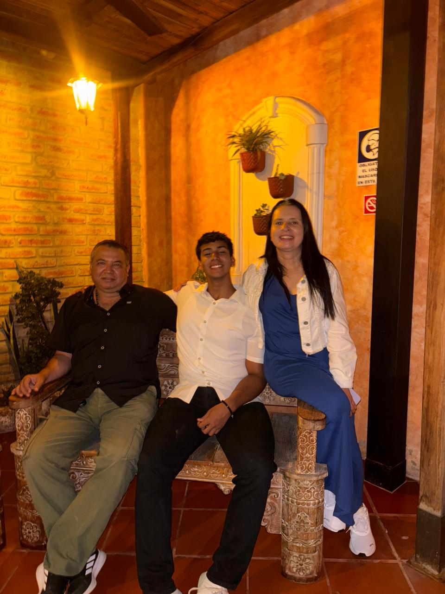
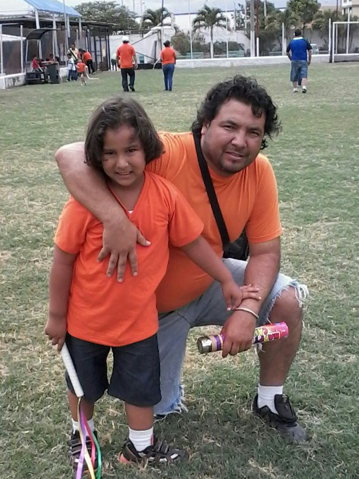

Abrelo Es para ti Pa
Feliz Cumpleaños PAPÁ 🫂


Quiero darte las Gracias por todo el apoyo que me has dado, muchas veces dando tu tiempo por cosas de nosotros, por la paciencia que has tenido con nosotros que no ha sido poca, eres muy fuerte, con una mentalidad buena, una excelente persona, que ha tenido sus equivocaciones a lo largo de la vida, pero has seguido adelante y aprendiendo de la mayoría de errores, no eres perfecto porque no hay personas así, por eso valoro mucho lo que haces por nosotros, eres un buen Padre.
Te Quiero pa 🫶🏽🫂✨